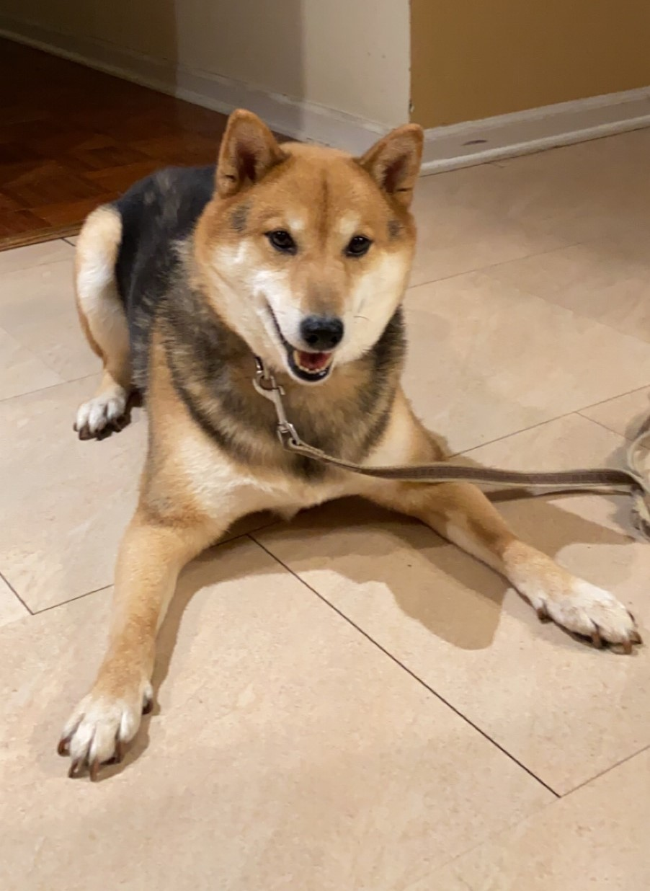
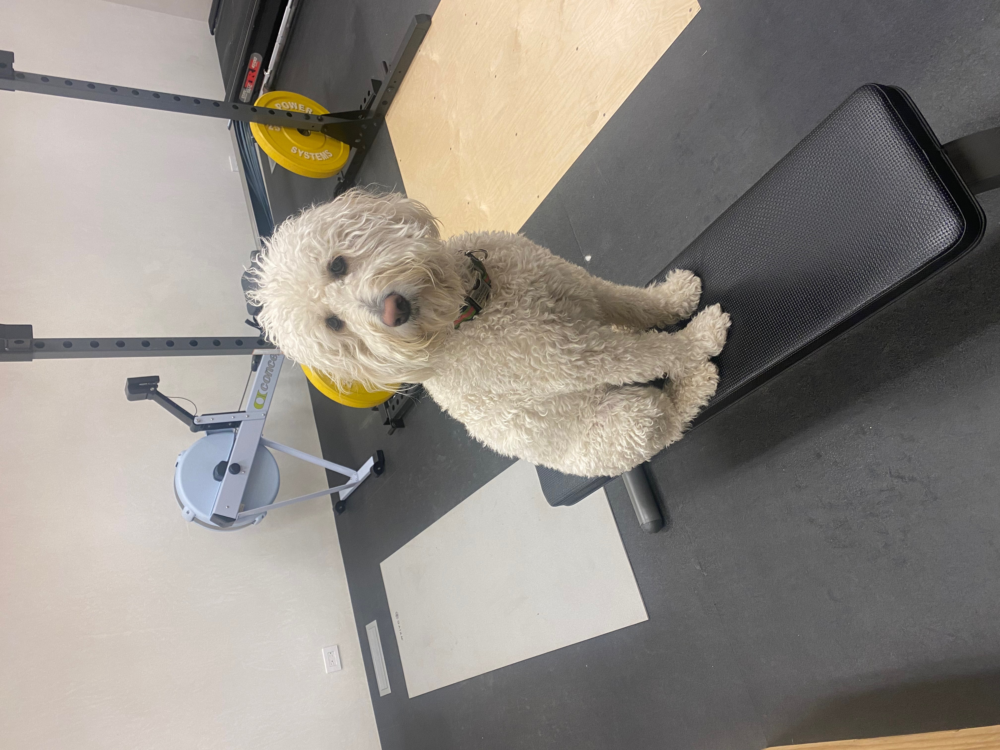
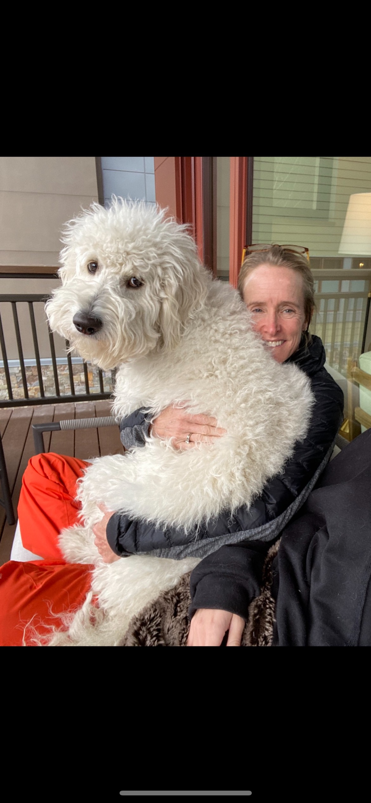
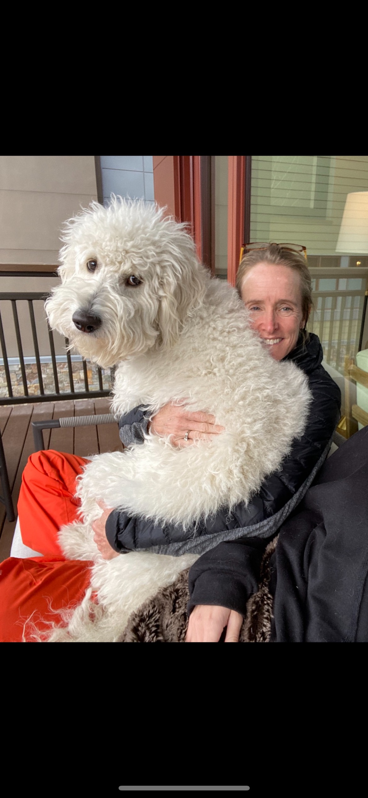
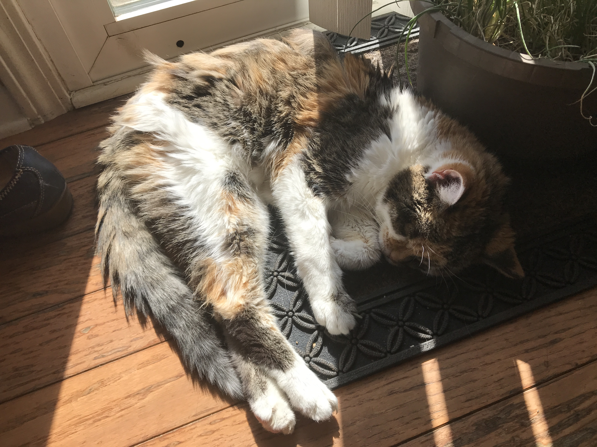
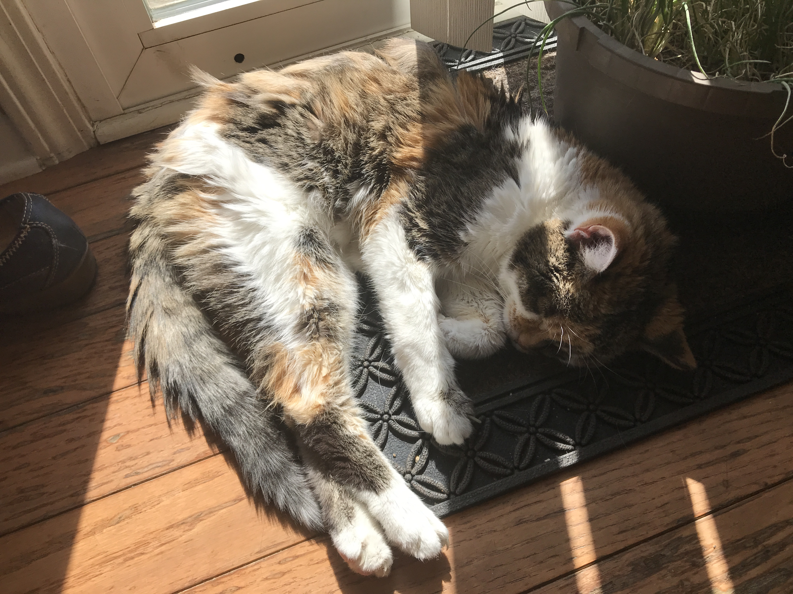

Hazel

Hazel is a year-old yellow Labrador retriever that enjoys long walks and playing catch (in or out of the water). She has a lot of energy, so she gets restless if she does not have enough exercise. Hazel loves meeting new people and seeing old friends. She likes to jump on people, but she is friendly and does not mean any harm.
Hazel will eat anything and everything. Like most Labrador retrievers, she loves food and will eat things that are not actually edible. Some of the things that Hazel has chewed on include hand towels, blankets, Apple Airpods, and Halloween decorations. She also loves to eat human food such as lettuce.
Photo Gallery


Likes
- Hazel likes to swim and catch her stick in the water.
- Hazel likes to go on long walks.
- Hazel likes tough chewing toys.
Biscuit Dog

Biscuit is a 2 year old shiba inu dog. Shiba inus are energetic and playful dogs. Biscuit enjoys running outside in circles and then laying down in the grass in the sun for hours. He also likes going for occasional swims.
As energetic as Biscuit is, he also likes to relax. He loves to sleep in his dog bed and watch Netflix with his owners. His favorite treat is apples.
Photo Gallery


Likes
- Going for walks
- Swimming
- Apples
Bacon

Bacon Q. Dog is a 9yr old labradoodle. He prefers to spend his days lounging among the three different beds/couches that his family has gifted him. He enjoys a walk or two around the neighborhood, as long as he can pretend that he doesn't see any of the other animals to avoid the embarrassment of not wanting to admit he has no wolf-like skills in chasing them.
At night just as the rest of the family is ready to relax, Bacon suddenly wants to release all of his energy. He will place his toys on a mini couch and frantically drag the couch around, giving his toys "a ride." There is also a lot of rolling. Lots and lots of rolling.
Photo Gallery


Likes
- Belly rubs
- Playing tug-of-war
- Sneaking onto the couch
Bear
Bear is a lazy, food-loving dog that is sometimes playful. His favorite activity is lying in the sun on his side and lounging. He enjoys playing with his toys and loves to fetch them when you throw them, but eventually, he gets bored and just stops fetching them and lays down.
Bear is also scared of a lot of things. He doesn’t like water (showers and even rain) or getting his nails clipped, and he’s sometimes even so lazy that he’ll just stop walking and sit down until you turn around and go back home.
Photo Gallery


Likes
- Food
- Laying in Bed
- Fetch
Millie
Millie is an English Cream goldendoodle but sometimes is described as a human in a dog suit. She loves cuddles and can speak if you tell her to. She always wants to be around people and lays in bed on her back like a person.
Millie is eager to go on walks and runs but is very out of shape. When we get to the final hill of each run she is way behind, she will nap for hours a day but then bounces up and down if she sees bunnies or squirrels.
Photo Gallery
 


Likes
- Outfits
- Her mom
- Bunnies
Molly

Molly is an 18 year old calico cat. She prefers spending her days lounging on the couch or curled up sleeping over a vent (or anything warm). Occasionally, she’ll go outside and attempt to hunt birds or rats (sometimes successful which is terrifying).
Molly’s favorite habit is to brush against people’s legs, especially during dinner when everyone is seated around a table. She’s an attention seeker, always meowing to get as many pets and head rubs as she possibly can.
Photo Gallery
 

Likes
- Scratching couches
- Sunbathing
- Brushing against people’s legs
Carter

Carter was born in Seattle. However, my brother bought him and brought him to Boston. Whenever my brother did not have time to walk Carter, he would put him on the treadmill. When Carter became too much of a responsibility for my brother as a college student, he took Carter to Vancouver to live with my mom, sister, and me. Because we lived in the mountains, he would sometimes howl in the middle of the night whenever he saw a wild animal.
Whenever I threw him a ball, he ran to the ball but never brought it back to me. He would sometimes escape the backyard of our house if we forgot to close the gates by accident. Even if we looked for him everywhere and did not find him, he knew the way home and always came back in the end. He loved going to the forest and the beach. He had his own spot on the living room couch and would television with us if he was bored or tired.
Photo Gallery


Likes
- Treats
- Beach
- Forest